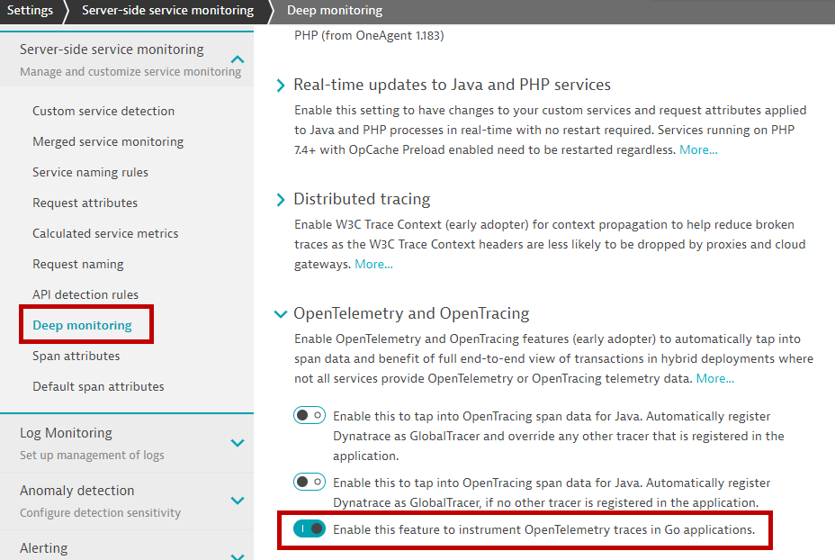
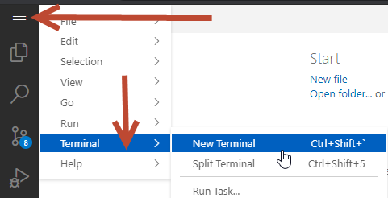
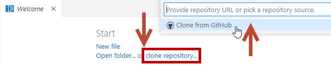
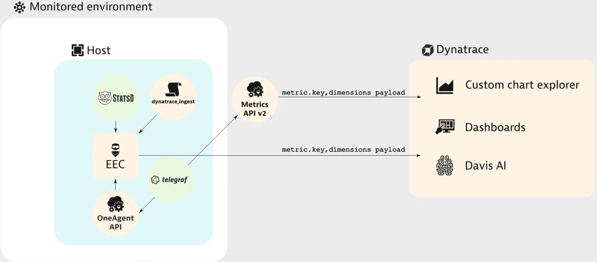
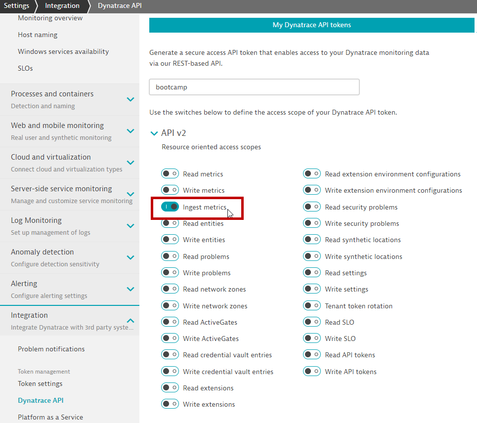

This repository contains labs for the OpenTelemetry Hands-On Session. The tech stack used are Go and Kafka.
Prerequisites
- Chrome Browser (recommended)
- Dynatrace Tenant/Environment
What You'll Learn
- TODO
- TODO
In this step we will prepare the environment for the hands on exercises
- Enable OpenTelemetry instrumentation
- Install OneAgent
- Clone the repos for the exercise
Step 1: Enable OpenTelemetry instrumentation
- Go to your environment, under
Settings>Server-side service monitoring>Deep Monitoring>OpenTelemetry and OpenTracing
Step 2: Install OneAgent
- Launch browser-based VS Code Server
- Enter the supplied password
- Open a NEW Terminal 
- Ensure that you are in the home directory
sourcethe profile file
$ cd ~
$ pwd
/home/dynatrace
$ souce .profile
- Validate
goversion
$ go version
go version go1.15.7 linux/amd64
- Access the Dynatrace tenant provided to you
- Deploy Dynatrace OneAgent (Linux)
- Start the installation with default settings
Step 3: Clone the repos
- Click on
clone repositoryon the Welcome tab  - Enter
https://github.com/Dynatrace-APAC/Workshop-otel.git - Click on Clone from GitHub and choose the default home directory
/home/dynatrace
You've arrived
- You are now ready to start the hands on!
In this step we extend a sample program with an additional OpenTelemetry Span. The sample consists of an HTTP Server which is able to calculate any Fibonacci number. The result of that calculation is getting sent to a Kafka Broker.
Compile and launch the program
- Go to a terminal window
- Change diretory to
ex1directory and compile the program using the command linego build. This produces a file namefibwithin the current directory.
$ cd ex1
$ go build
- Launch
fib.exevia your current Terminal
$ ./fib
- In your Dynatrace Environment navigate to
Hostsand select the host - Open a NEW terminal window
- Fire transactions to access your NEW HTTP Service
$ curl http://localhost:28080/fib?n=1;echo
- Wait until
fibshows up among the Processes on this host - Dynatrace by default has decided to disable monitoring for this executable (
Process isn't monitored). Click on the linkmonitored technologiesand override the defaults for this Process Group. 
- Within your Terminal press
Ctrl-Cto shut downfib. Launchfibagain. - Fire transactions to access the http service, using n=1
$ curl http://localhost:28080/fib?n=1;echo
- Wait for a couple of seconds. After that you should see a PurePath for the HTTP request you just sent to your HTTP Service.
- The contents of this PurePath is produced by out of the box Sensors of OneAgent

1-1 Declaring a Global Tracer
- Shut down
fibusingCtrl-Cwithin your Terminal if you haven't done so already - In this section, we will introduce code that are required to initialize OpenTelemetry and configure a minimal Span Exporter
- Expand the ex1 folder and open
main.goby clicking on the filename - Line 15 and 19 - Insert // on each line - this is the NEW code that we want to introduce
- This code snippet tells Go to instantiate the OpenTelemetry Global Tracer SDK. This is part of the specs to implement OpenTelemetry in any language
if err := initGlobalTracer(nil); err != nil {
panic(err)
}
1-2 Producing SPAN on http request
- Within function
FibServerare codes accessing the OpenTelemetry SDK. - Line 27 and 34 - Insert // on each line this is the NEW code that we want to introduce
- This code snippet declares the tracing SDK for
httpand together with thecontext, Go willstartthe trace for allhttp requestsandendthe trace when the requests completes
tracer := otel.Tracer("http")
ctx := context.Background()
var span trace.Span
ctx, span = tracer.Start(ctx, "http-request")
defer span.End()
Recompile and execute transactions again
- VS Code Server auto-saves any edits made, however, if you would like to be sure, press
Ctrl-Sto save your changes inmain.go - In your Terminal, compile the program using the command line
go build, launchfiband in the other terminal, access the http service, using n=2 to differentiate the transactions
$ go build
$ ./fib
$ curl http://localhost:28080/fib?n=2;echo
You've arrived
- The PurePath you just created now contains an additional PurePath Node created via OpenTelemetry

The OpenTelemetry Span we just created is more or less redundant. The HTTP Sensor of Dynatrace already created the necessary PurePath Node. Whatever we have introduced via OpenTelemetry doesn't really enrich our experience. In this task our goal is to grant users of Dynatrace deeper insight into what is going on when the Fibonacci number is getting calculated.
Prerequisites
- You have completed the previous task
Producing a simple Span and report it to Dynatrace - Shut down
fibusingCtrl-Cwithin your Terminal if you haven't done so already - In this section, we will introduce code that governs OpenTelemetry functionality into the Fibonacci function
2-1 Passing the trace context into Fibonacci function
- Expand the
ex1\fibonaccifolder and openfibonacci.goby clicking on the filename - Line 17 and 22 - Delete // on each line - this is OLD code that we want to remove
- Line 24 and 29 - Insert // on each line - this is the NEW code that we want to introduce
- Line 31 and 33 - Delete // on each line - this is OLD code that we want to remove
- Line 35 and 39 - Insert // on each line - this is the NEW code that we want to introduce
- These code snippet mandates that the
trace contextis sent as a parameter and returned together with the function
func **NEW**(ctx context.Context) Fibonacci {
return &fibonacci{Context: ctx}
type fibonacci struct {
Context context.Context
}
2-2 Producing SPAN inside Calc method
- Line 46 and 51 - Insert // on each line - this is the NEW code that we want to introduce
- These code snippets produce a SPAN and starts the tracer inside the Calc method. The
trace contextmust also be sent so that it can be propergated from the parent, and linked to the child
var span trace.Span
tracer := otel.Tracer("")
f.Context, span = tracer.Start(f.Context, fmt.Sprintf("fib(%d)", n))
defer span.End()
2-3 Creating a SPAN attribute
- Line 64 and 66 - Insert // on each line - this is the NEW code that we want to introduce
- This code snippets calls the OpenTelemetry SDK to set a SPAN attribute with a specific name and the data type
span.SetAttributes(label.Key("fib.result").Int(result))
- VS Code Server auto-saves any edits made, however, if you would like to be sure, press
Ctrl-Sin order to save the changes you've made infibonacci.go
2-4 Execution of Fibonacci function in main.go now requires trace context
- Because of these changes we are now getting an error in
main.go. Creating a Fibonacci Calculator now requires an additional parameter
- Open
main.go - Line 39 and 41 - Delete // on each line - this is OLD code that we want to remove
- Line 43 and 45 - Insert // on each line - this is the NEW code that we want to introduce
- The previous
fibonacci.**NEW**().Calc(n)is not valid any more and thus, this code snippet shows how we can pass thetrace contextfrom the parenthttp-requestto the child request
result, numIterations := fibonacci.**NEW**(ctx).Calc(n)
Recompile and execute transactions again
- VS Code Server auto-saves any edits made, however, if you would like to be sure, press
Ctrl-Sto save your changes inmain.go - In your Terminal, compile the program using the command line
go build, launchfiband in the other terminal, access the http service, using n=3 to differentiate the transactions
$ go build
$ ./fib
$ curl http://localhost:28080/fib?n=3;echo
- The PurePath you just created now contains an additional PurePath Node per invocation of the Fibonacci Calculator's
Calcfunction.
2-5 Tell Dynatrace which OpenTelemetry Attributes are of interest for you
- In Dynatrace navigate to
Settings>Server-side service monitoring>Span Attributes. Add an additional item here. The key you want Dynatrace to capture isfib.result.
2-6 Capture a Request Attribute based on the OpenTelemetry Key
- In Dynatrace navigate to
Settings>Server-side service monitoring>Request Attributes. - The Data Source for our Request Attribute needs to be a
Span Attribute. - We are just interested in the last value within the PurePath - any intermediate results should be ignored.
- The Key of the Request Attribute is called
fib.result(unless you have chosen a different name) - Remember to click on
SAVEin order for the Request Attribute to be registered!
- In your Terminal access the http service with a few transactions, using n=5 and n=6 to differentiate the transactions
$ curl http://localhost:28080/fib?n=5;echo
$ curl http://localhost:28080/fib?n=6;echo
You've arrived
- The PurePath you just created now contains an additional PurePath Node per invocation of the Fibonacci Calculator's
Calcfunction. In addition the Request Attribute you just created is also available on every PurePath.
With Exercise 2 we actually overshot. First of all, we had to modify the existing source code of the Fibonacci Calculator. This is rarely possible for third party libraries. But even then you'd rather prefer to use the original libraries instead of patching them. Second, our solution traces ALL the invocations of the Calc function. Trace sizes easily explode given a sufficiently high input value.
Prerequisites
- Shut down
fibusingCtrl-Cwithin your Terminal if you haven't done so already - In this section, we will introduce code that governs OpenTelemetry functionality into the Fibonacci function
- Close the
main.goandfibonacci.gotabs from ex1, in order not to get confused
3-1 Wrapping trace+context over Fibonacci function
- In your terminal, change diretory to
ex3directory.
$ cd ..
$ cd ex3
- Expand the
ex3\fibonaccifolder and openfibonacci.goby clicking on the filename - Line 34 and 54 - Insert // on each line - this is the NEW code that we want to introduce
- These code snippets creates a wrapper around the Fibonacci function. The structure of the code mandates that
Trace Contextneeds to be maintained in order for the tracing relationship to be visualizedstartandendtracers will also need to be defined correctly
// Wrap produces a Fibonacci Calculator with tracing capabilities
func Wrap(ctx context.Context, f Fibonacci) Fibonacci {
return &tracingFib{Context: ctx, Fibonacci: f}
}
type tracingFib struct {
Fibonacci Fibonacci
Context context.Context
}
func (tf *tracingFib) Calc(n int) (int, int) {
var span trace.Span
tracer := otel.Tracer("")
tf.Context, span = tracer.Start(tf.Context, fmt.Sprintf("fib(%d)", n))
defer span.End()
result, iterations := tf.Fibonacci.Calc(n)
span.SetAttributes(label.Key("fib.result").Int(result))
return result, iterations
}
3-2 Changes are required on main.go - Producing SPAN on http request
- The changes we've made to fibonacci.go again are creating errors within main.go.
- Expand the ex3 folder and open
main.goby clicking on the filename - As we are working on a clean set of codes, this step assumes that ex1 was not done before
- Line 28 and 35 - Insert // on each line this is the NEW code that we want to introduce
3-2 Execute Fibonacci function that has the trace WRAPPER function
- Line 40 and 42 - Delete // on each line - this is OLD code that we want to remove
- Line 44 and 46 - Insert // on each line - this is the NEW code that we want to introduce
- This code snippet is modfied based on how the NEW Fibonacci function is designed - OpenTelemetry SDK wrapped around the function
result, numIterations := fibonacci.Wrap(ctx, fibonacci.**NEW**()).Calc(n)
Recompile and execute transactions again
- VS Code Server auto-saves any edits made, however, if you would like to be sure, press
Ctrl-Sto save your changes inmain.go - In your Terminal, compile the program using the command line
go build, launchfiband in the other terminal, access the http service, using n=7 and n=8 to differentiate the transactions
$ go build
$ ./fib
$ curl http://localhost:28080/fib?n=7;echo
$ curl http://localhost:28080/fib?n=8;echo
You've arrived
- The PurePath you just created does no longer report a Span for every single invocation of the function
Calc. Most importantly the code of the original Fibonacci Calculator remains untouched. You've managed to create an instrumentation library that performs the necessary work.
Compile Time instrumentation might be fun to some extent, but it's usually not your job to do that. The idea behind OpenTelemetry is that third party software either already comes fully instrumented (with all the necessary source code for OpenTelemetry included) or alternatively is getting provided as an optional feature via a helper library.
Prerequisites
- You have completed the previous task
Child Spans and Span Attributes - Shut down
fibusingCtrl-Cwithin your Terminal if you haven't done so already - In this section, we will introduce code a kafka library created and contributed by a member of the OpenTelemetry Community: Shopify Sarama Kafka libraries
4-1 Kafka Broker URL
- Expand the ex3\kafka folder and open
kafka.goby clicking on the filename - Line 12 in
kafka.gorefers to the Kafka Broker that is supposed to receive messages. Replace onlykafka.mushroom.homewith the URL you've been given.
4-2 Introduce the Sarama lib wrapper
- Line 37 in
kafka.gorepresents the magic that's required to introduce OpenTelemetry Tracing capabilities to an existing Kafka Producer - Line 36 and 38 - Insert // on each line - this is the NEW code that we want to introduce
- The code snippet wraps the Sarama libraries to the Kafka
producerfunction
producer = otelsarama.WrapSyncProducer(config, producer)
Recompile and execute transactions again
- VS Code Server auto-saves any edits made, however, if you would like to be sure, press
Ctrl-Sto save your changes inkafka.go - In your Terminal, compile the program using the command line
go build, launchfiband in the other terminal, access the http service, using n=9 to differentiate the transactions
$ go build
$ ./fib
$ curl http://localhost:28080/fib?n=9;echo
- The PurePath you just created contains an additional PurePath Node for when the application reaches out to the Kafka Broker

You've arrived
- You have successfully instrumented Kafka Client communication without modifying the original library.
Apart from getting deeper insight into what's going on within an application on a transactional level, OpenTelemetry also covers the ability to gather metrics. In this lesson we learn how to enable the OpenTelemetry Metric Exporter for Dynatrace.
Prerequisites
- You have completed the previous task
Creating Instrumentation Libraries - Shut down
fibusingCtrl-Cwithin your Terminal if you haven't done so already - In this section, we will introduce code to initate the metrics library and control how Dynatrace collects the metrics via the Otel Dynatrace Exporter
- A good reference is available on the Dynatrace Help online documentation Metric Ingestion

5-1 Instantiate Dynatrace Exporter
- Expand the ex3 folder and open
main.goby clicking on the filename - Line 18 and 20 - Insert // on each line - this is the NEW code that we want to introduce
- This code snippet ensures that
initMetricsProvider()will get called upon process start - Function
maininmain.goshould now look like this:
func main() {
if err := initGlobalTracer(nil); err != nil {
panic(err)
}
initMetricsProvider()
http.HandleFunc("/fib", FibServer)
http.HandleFunc("/favicon.ico", faviconHandler)
http.ListenAndServe(":28080", nil)
}
5-2 Using OneAgent endpoint for metrics ingestion
- Expand the ex3 folder and open
metrics.goby clicking on the filename - Line 19 refers to the OneAgent REST API URL. You do not need to modify anything here.
- Line 59 refers to metric name. You do not need to modify anything here.
Recompile and execute transactions again
- VS Code Server auto-saves any edits made, however, if you would like to be sure, press
Ctrl-Sto save your changes inmetrics.goandmain.go - In your Terminal, compile the program using the command line
go build, launchfiband in the other terminal - Access the http service by creating a series of requests like these. Feel free to repeat some of these requests a couple of times
$ go build
$ ./fib
$ curl http://localhost:28080/fib?n=1;echo
$ curl http://localhost:28080/fib?n=2;echo
$ curl http://localhost:28080/fib?n=3;echo
$ curl http://localhost:28080/fib?n=4;echo
$ curl http://localhost:28080/fib?n=5;echo
$ curl http://localhost:28080/fib?n=6;echo
$ curl http://localhost:28080/fib?n=7;echo
$ curl http://localhost:28080/fib?n=8;echo
$ curl http://localhost:28080/fib?n=9;echo
$ curl http://localhost:28080/fib?n=10;echo
$ curl http://localhost:28080/fib?n=11;echo
$ curl http://localhost:28080/fib?n=12;echo
Visualize the metrics using the Data Explorer
- Open the metrics browser in Dynatrace WebUI, find the metric, and click on the button
create chart - Alternatively, you can also use the Data Explorer and click on the Dropdown box
Filter metrics byand type inotel. - Click on the input box
Split by. You should be able to selectinputhere. - For this specific kind of metric it makes sense to select
Pieas the Visualization on the right hand side menu 
- Click on
Run query
5-3 Using DynatraceAPI endpoint for metrics ingestion
- Modify
metrics.goto cater for the DynatraceAPI - Line 19 - Insert // - this is OLD endpoint that we want to remove
- Line 22 - requires you to specify an API Token. It is required for authentication. Copy the API Token to your clipboard and paste into the String
- In the Dynatrace WebUI navigate to
Settings>Integration>Dynatrace API - Generate a new API Token here
- The access scope (= permissions) needs to include
Ingest metrics - The name of the API Token can get chosen freely
- You can now copy the API Token to your clipboard and paste into the String on Line 22 of
metrics.go - 
- In the Dynatrace WebUI navigate to
- Line 25 - Delete // - this is NEW endpoint that we want to introduce
- Line 25 - Edit the URL to include your environment ID
- Line 30 - Delete // - this is to INTRODUCE the Dynatrace API token into the code
- Line 59 - Insert // - this is OLD metric name that we want to remove
- Line 60 - Delete // - this is NEW metric name that we want to introduce
Recompile and execute transactions again
- VS Code Server auto-saves any edits made, however, if you would like to be sure, press
Ctrl-Sto save your changes inmetrics.goandmain.go - In your terminal, create a series of requests like these. Feel free to repeat some of these requests a couple of times
$ curl http://localhost:28080/fib?n=12;echo
$ curl http://localhost:28080/fib?n=13;echo
$ curl http://localhost:28080/fib?n=14;echo
$ curl http://localhost:28080/fib?n=15;echo
$ curl http://localhost:28080/fib?n=16;echo
You've arrived
- You have successfully reported a metric via OpenTelemetry and charted it in Dynatrace
- Like with additional Spans you can expect third party libraries to already have chosen a set of metrics for you, that are worth reporting.
We hope you enjoyed this lab and found it useful. We would love your feedback!